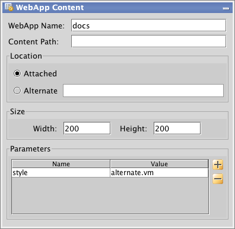

This add-on is intended to provide a simple mechanism to manage and display the documentation associated with a WebCTRL system. There are numerous as-builts, network diagrams, and other documents that are associated with WebCTRL locations, but are awkward to attach as graphics.
This is a very early version of this add-on which, while functional, is really intended to get some real world feedback about the features needed to manage documents in a WebCTRL system. It currently has no user interface and both the documents and their mapping to WebCTRL locations must be managed by manipulating files on the WebCTRL server. If you do not have direct access to the file system of the WebCTRL server, we suggest that you use WebDAV to get access. See WebCTRL help for more details.

You display the documents associated with a location in WebCTRL using ViewBuilder's WebApp Content control. Make the size of the control large enough to contain the longest list of documents you may wish to display. The exact format of the displayed content depends on the style parameter associated with the control. If no style is specified, the content is just a simple list of links to the associated documentation. If you want to format the content differently, you may create your own style templates (more on this later) and specify the style to use with the "style" parameter as shown below.

The docs add-on configuration and the documents to display are all contained inside your system directory at system/webapp_data/docs/private/. This directory will be created when the add-on is first enabled. This directory will have 3 important subdirectores:
The config directory contains the files that configure the add-on. The most important of these is docs.csv. This is the file that enumerates the documents and the locations where they are attached. It is a simple text file of comma separated values. This file should be easy to edit with a spreadsheet program like Excel.